Algoritmos e Estruturas de dados
Unirios
Aula 11
Árvores
Hierarquia · árvore binária de busca · árvore rubro-negra
Aula de implementação — cada nó é alocado com malloc e guarda
dois ponteiros, esq e dir; a árvore é o ponteiro para a raiz, e
NULL é a árvore vazia, sem nenhum caso especial.
Camada 1
Introdução
Pense no organograma de uma empresa. A diretora está no topo; abaixo dela, dois gerentes; abaixo de cada gerente, a sua equipe.
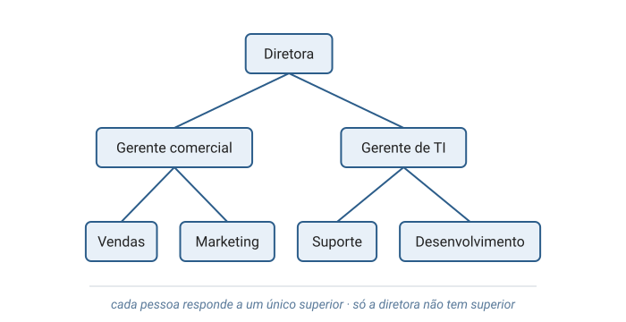
Cada pessoa responde a um único superior, e só quem está no topo não responde a ninguém.
Camada 2
O que é uma árvore
Essa forma de organizar tem nome: árvore (tree). Uma árvore é formada por:
- nós (nodes): os elementos guardados, como cada pessoa do organograma;
- arestas (edges): as ligações entre um nó e os nós logo abaixo dele;
- raiz (root): o único nó sem nenhum nó acima, no topo.
Cada nó, exceto a raiz, está ligado a exatamente um nó acima dele.
Cormen et al., Apêndice B, seção B.5 — árvores enraizadas (rooted trees).
Pai, filho e folha
O nó logo acima é o pai (parent); os nós logo abaixo são os filhos (children). Um nó sem filhos é uma folha (leaf); um nó com filhos é um nó interno (internal node).
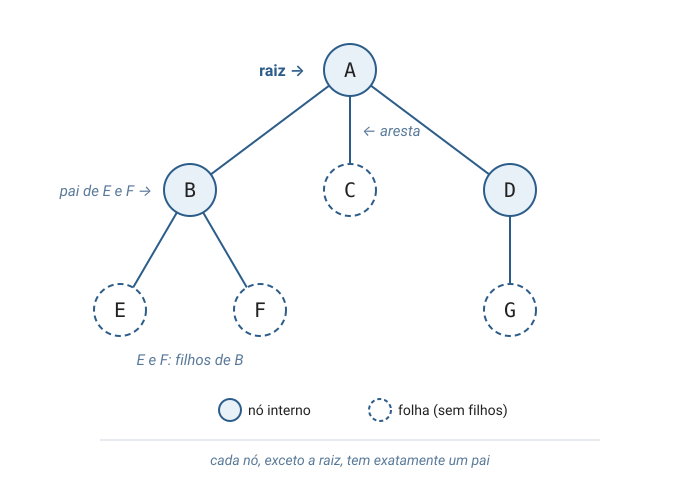
As operações
Cada nó guarda uma chave (key), o valor que o identifica. Sobre as chaves, a árvore oferece quatro operações:
- buscar (search): encontrar o nó que guarda uma chave;
- inserir (insert): acrescentar um nó novo;
- remover (delete): retirar um nó sem perder os demais;
- percorrer (traverse): visitar todos os nós, cada um uma vez.
Note o que a árvore não oferece: um nó com dois pais, um caminho que volta
ao ponto de partida (um ciclo) e acesso direto por posição, como v[3] em um vetor.

Turma, Cormen define primeiro a árvore livre: um conjunto de nós em que há caminho entre quaisquer dois, sem direção e sem ciclos. Só depois ele escolhe um nó para ser a raiz, e é essa escolha que cria as relações de pai e filho. Cormen et al., Apêndice B, seção B.5 — Árvores
Camada 3
Uma árvore é feita de árvores
Cada filho é, ele próprio, a raiz de uma árvore menor: uma subárvore (subtree).
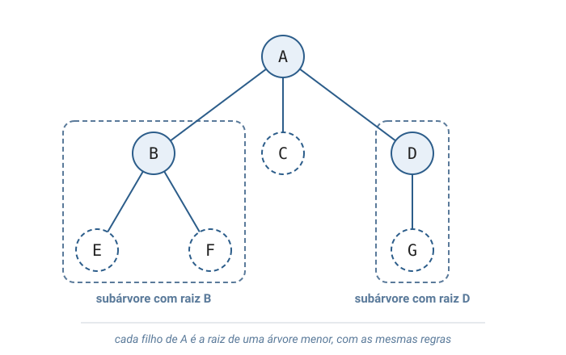
Por isso os algoritmos de árvore se escrevem naturalmente de forma recursiva: a função trata a raiz e chama a si mesma para cada subárvore.
Profundidade e altura
A profundidade (depth) de um nó conta as arestas da raiz até ele; a altura (height) da árvore é a maior profundidade.
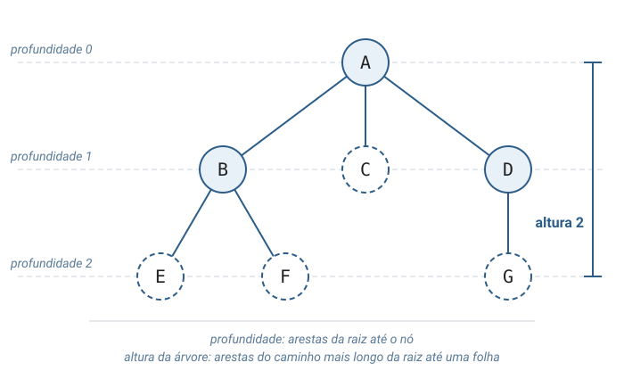
Cormen et al., Apêndice B, seção B.5.
Tipo 1 — Árvore geral
As árvores se distinguem pela regra que impõem aos filhos. A mais livre é a árvore geral: cada nó pode ter qualquer número de filhos. Ela modela hierarquias como pastas, organogramas e páginas web.
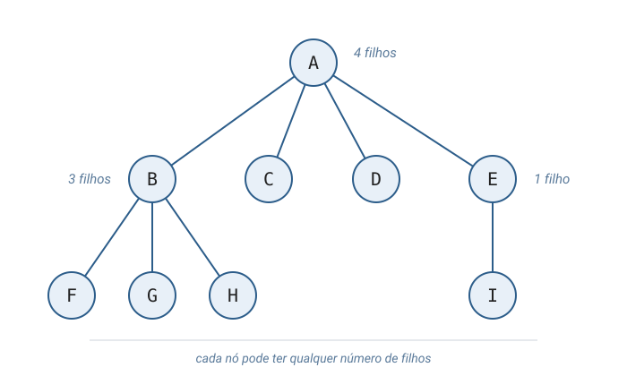
Tipo 2 — Árvore binária
Cada nó tem no máximo dois filhos, com nome fixo: o filho esquerdo e o filho direito.
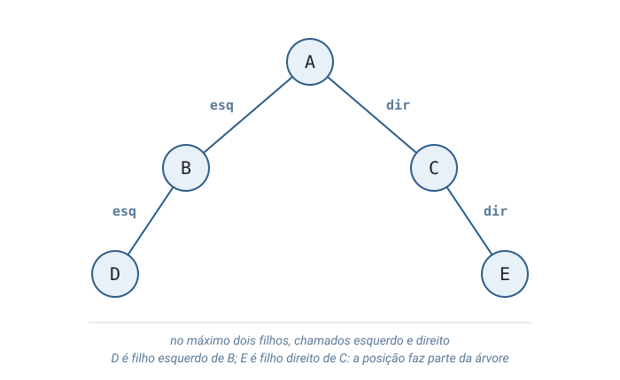
Cormen et al., Apêndice B, seção B.5: um filho único à esquerda é diferente de um filho único à direita.
O que a árvore binária resolve
Dois filhos representam uma escolha entre dois caminhos. Essa escolha aparece em problemas diferentes:
- busca: a chave procurada é menor ou maior que a do nó; cada comparação descarta um lado;
- expressões: cada operação, como a soma, tem dois operandos, um em cada filho;
- decisões: cada pergunta de sim ou não abre dois ramos, até chegar a uma resposta.
Árvore binária de busca
Entre as árvores binárias, a mais usada é a árvore binária de busca, ou ABB (binary search tree). Ela acrescenta uma regra de ordem: em todo nó, todas as chaves da subárvore esquerda são menores que a chave do nó, e todas as da subárvore direita são maiores.
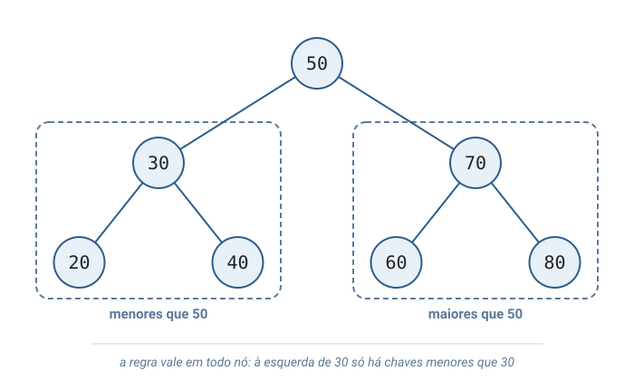
Cormen et al., cap. 12 (árvores binárias de busca).
Tipo 3 — Árvore balanceada
A forma da ABB depende da ordem de chegada. No pior caso (worst case), a ordem que exige mais trabalho, chaves crescentes formam uma cadeia. Uma ABB balanceada segue regras extras que mantêm a altura perto do mínimo possível.
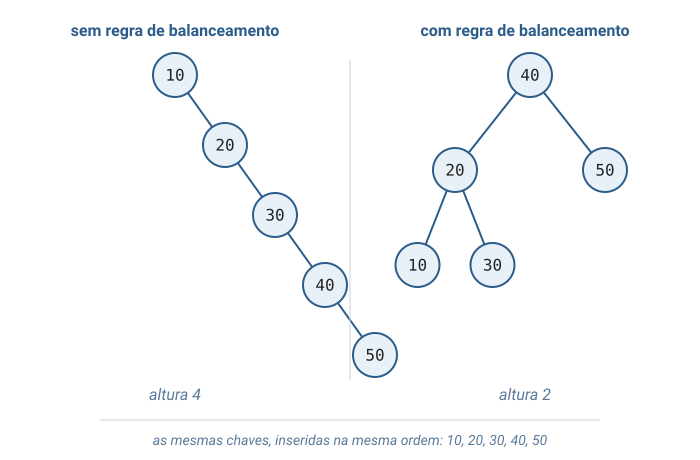
Exemplos: árvore rubro-negra (Cormen et al., cap. 13) e árvore AVL. A árvore B (Cormen et al., cap. 18) aplica a mesma ideia a nós com muitas chaves.
Por que existem tipos diferentes
A árvore geral representa qualquer hierarquia, mas não ajuda a encontrar uma chave. Cada tipo acrescenta uma regra, e cada regra garante uma propriedade nova:
| Tipo | Regra | O que a regra garante |
|---|---|---|
| Geral | qualquer número de filhos | representa qualquer hierarquia |
| Binária | até dois filhos; na ABB, menores à esquerda e maiores à direita | cada comparação descarta um lado |
| Balanceada | ABB com a altura perto do mínimo | busca curta também no pior caso: cerca de 40 comparações para 1 milhão de chaves |
O nó em C
Nesta aula, a árvore em C é binária. Cada nó é uma struct, um tipo que agrupa
campos sob um nome: a chave e dois ponteiros, variáveis que guardam o
endereço de memória de outro nó.
// Cada no guarda uma chave e dois ponteiros: um para o filho da
// esquerda e outro para o filho da direita. Filho ausente vale NULL.
typedef struct No {
int chave;
struct No* esq;
struct No* dir;
} No;
NULL é o valor do ponteiro que não aponta para nenhum nó, e typedef
permite escrever No no lugar de struct No. A árvore inteira é acessada
por um único ponteiro externo, raiz, e está vazia quando raiz vale NULL.
Backes, capítulo de árvores: a árvore binária em C com a mesma struct de dois ponteiros.
As operações em detalhe
Na ABB, buscar, inserir e remover seguem o mesmo caminho de comparações, da raiz para baixo:
- buscar: compara e desce por um lado só; para na chave ou em
NULL. - inserir: desce como na busca e liga o nó novo no lugar do
NULLencontrado. - remover: o tratamento depende de o nó ter zero, um ou dois filhos.
- percorrer: visita o nó e as duas subárvores; a posição do nó (antes, entre ou depois delas) define a ordem.
O trabalho de buscar, inserir e remover cresce com a altura da árvore, e não com o total de nós.
Invariantes — o que sempre vale
Toda operação começa e termina com estas propriedades verdadeiras:
- Cada nó, exceto a raiz, tem exatamente um pai.
- Existe um único caminho da raiz até cada nó.
- Uma árvore não vazia com n nós tem n − 1 arestas.
- Na ABB, em todo nó: todas as chaves da subárvore esquerda são menores, e todas as da direita, maiores.
Camada 4
Definição recursiva
Cormen define a árvore binária usando a própria árvore binária. Uma árvore binária é:
- vazia, sem nenhum nó; ou
- uma raiz ligada a duas árvores binárias: a subárvore esquerda e a subárvore direita.
Em C, o primeiro caso éNULL; o segundo é umNocomesqedir. Toda função recursiva desta aula trata esses dois casos.
Cormen et al., Apêndice B, seção B.5 (árvores binárias).
O TAD Árvore Binária de Busca
O tipo abstrato de dados (TAD) descreve o que cada operação faz, sem dizer como. Os axiomas, igualdades que toda implementação correta precisa satisfazer, fixam o comportamento:
TAD ABB de Inteiros
Constante:
VAZIA (em C: NULL)
Operações:
inserir(ABB, Inteiro) -> ABB
remover(ABB, Inteiro) -> ABB
buscar(ABB, Inteiro) -> Booleano
pre_ordem(ABB) -> Sequência de Inteiros
em_ordem(ABB) -> Sequência de Inteiros
pos_ordem(ABB) -> Sequência de Inteiros
Axiomas (para toda ABB A e inteiros x e y, com x ≠ y):
A1. buscar(VAZIA, x) = falso
A2. buscar(inserir(A, x), x) = verdadeiro
A3. buscar(remover(A, x), x) = falso
A4. buscar(inserir(A, y), x) = buscar(A, x)
A5. em_ordem(A) lista as chaves de A em ordem crescente
A5 é o axioma que define a ABB: a regra de ordem faz o percurso em ordem sair ordenado.
Em C, buscar devolve o nó encontrado, ou NULL, que faz o papel de falso.
Especificação de TAD por operações e axiomas: ver Veloso & Pereira, capítulo de árvores.
Representação interna como tupla
Uma tupla é uma lista ordenada de componentes. A implementação em C é descrita por uma tupla de cinco:
A = (N, chave, esq, dir, raiz)
- N: o conjunto, possivelmente vazio, dos nós alocados;
- chave: associa cada nó ao inteiro que ele guarda;
- esq e dir: associam cada nó aos seus filhos, ou a
NULL; - raiz: o ponteiro externo para o nó do topo, ou
NULL.
A árvore está vazia exatamente quando raiz é NULL: essa invariante liga
o estado lógico da árvore ao estado do ponteiro.
Árvore rubro-negra: as cinco propriedades
A árvore rubro-negra (red-black tree) é uma ABB em que cada nó tem uma cor. Cinco propriedades limitam a forma da árvore:
- todo nó é vermelho ou preto;
- a raiz é preta;
- todo NIL (o
NULLdo código, a posição vazia abaixo de um nó) é preto; - um nó vermelho tem os dois filhos pretos;
- de um nó até qualquer NIL abaixo dele, todo caminho tem o mesmo número de nós pretos.
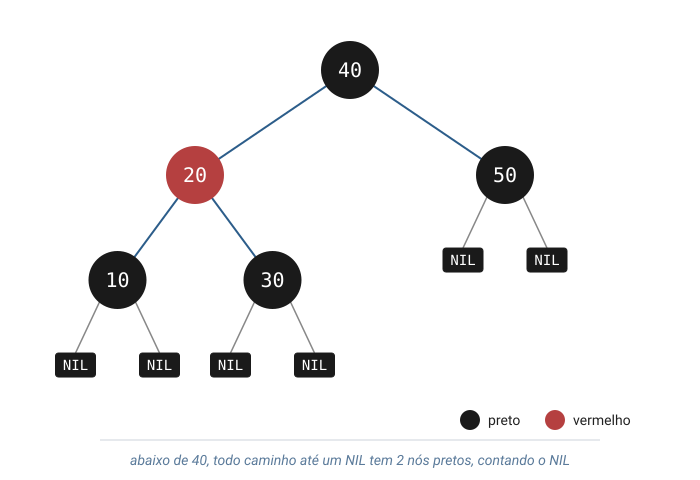
Cormen et al., cap. 13.
Como a árvore se corrige
O nó novo nasce vermelho e não muda a contagem de pretos de nenhum caminho. O risco é um vermelho com filho vermelho (propriedade 4). Duas ferramentas corrigem:
- rotação (rotation): muda três ponteiros e preserva a ordem das chaves;
- inversão de cores (color flip): o pai fica vermelho e os dois filhos, pretos.
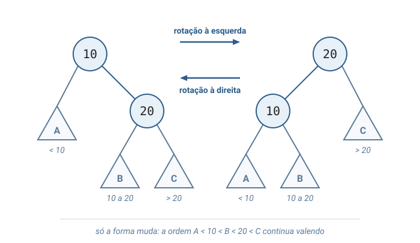
A variante implementada: caída para a esquerda
O código usa a rubro-negra caída para a esquerda (left-leaning red-black tree), que acrescenta uma regra: um nó vermelho é sempre filho esquerdo. A correção se reduz a três testes, feitos em cada nó do caminho de volta:
- filho direito vermelho e esquerdo preto → rotação à esquerda;
- dois vermelhos seguidos à esquerda → rotação à direita;
- dois filhos vermelhos → inversão de cores.
Sedgewick, Left-leaning Red-Black Trees (2008). A versão clássica de Cormen et al., cap. 13, trata seis casos.
Turma, a árvore rubro-negra foi criada por Rudolf Bayer, em 1972, com o nome de árvore B binária simétrica. A convenção das cores vermelho e preto veio depois, no estudo de Leonidas Guibas e Robert Sedgewick, em 1978. Cormen et al., notas do cap. 13
Camada 5
Análise — tudo depende da altura
A notação O(·) indica o ritmo em que o custo cresce com o número de nós n; como as operações descem um caminho, esse ritmo é o da altura. log n, o número de vezes que n pode ser dividido por 2 até chegar a 1, cresce muito devagar:
| Operação | ABB balanceada | ABB em cadeia | Rubro-negra |
|---|---|---|---|
buscar | O(log n) | O(n) | O(log n) |
inserir | O(log n) | O(n) | O(log n) |
remover | O(log n) | O(n) | O(log n) |
| percorrer | O(n) | O(n) | O(n) |
A definição completa de O está em Cormen et al., cap. 3, e em Toscani & Veloso. A remoção na rubro-negra (Cormen et al., cap. 13) não faz parte do código desta aula.
Por que as cores limitam a altura
Todo caminho tem o mesmo número de pretos, e dois vermelhos nunca aparecem seguidos. Logo, o caminho mais longo tem no máximo o dobro do mais curto.
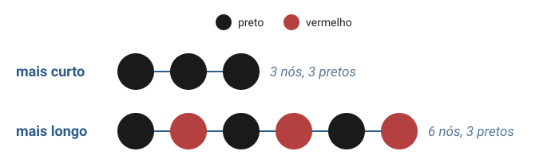
h ≤ 2 · log₂(n + 1)
Lê-se: a altura nunca passa do dobro do logaritmo de n. Para 1 milhão de chaves:
| ABB inserida em ordem | Rubro-negra | |
|---|---|---|
| altura | 999.999 | no máximo 39 |
| comparações em uma busca | até 1.000.000 | até 40 |
Cormen et al., cap. 13, Lema 13.1.
Camada 6
Onde as árvores aparecem
A mesma estrutura resolve problemas em áreas diferentes da computação:
- sistemas de arquivos: pastas dentro de pastas;
- bibliotecas padrão:
std::map(C++) eTreeMap(Java) guardam pares chave-valor em ordem numa árvore rubro-negra; - compiladores: cada expressão é representada por uma árvore sintática;
- bancos de dados: índices em árvore B;
- redes: a hierarquia de nomes do DNS.
DNS: sistema de nomes de domínio (Domain Name System).
Variantes
Cada variante muda uma regra para atender a uma necessidade diferente:
- AVL (iniciais de Adelson-Velsky e Landis): balanceamento mais rígido; buscas mais curtas, inserções com mais rotações;
- árvore B: muitas chaves e filhos por nó; poucas leituras de disco;
- heap: árvore binária com o maior elemento sempre na raiz;
- trie (árvore de prefixos): cada aresta é uma letra; serve ao preenchimento automático.
A árvore também é um caso particular de grafo: nós ligados por arestas, sem ciclos.
Bloco 2
Visualização gráfica
Quatro sequências, do concreto ao código: um sistema de arquivos; uma árvore binária montada à mão e os seus três percursos; a ABB buscando, inserindo e removendo; e a rubro-negra se corrigindo a cada inserção.
Passo 1 — pastas dentro de pastas
Todo sistema de arquivos começa numa pasta raiz, escrita / no Linux e no macOS.
Uma pasta contém pastas e arquivos. Um arquivo guarda dados, mas não contém pastas nem arquivos:
é sempre uma folha.
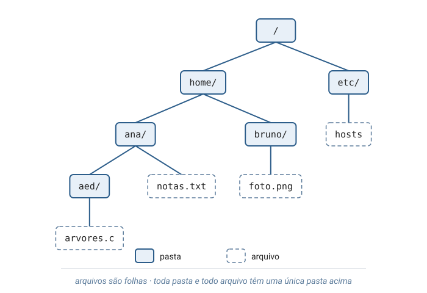
Passo 2 — o caminho de um arquivo
O endereço /home/ana/aed/arvores.c lista os nós da raiz até o arquivo.
Como cada pasta tem um único pai, esse caminho é único.
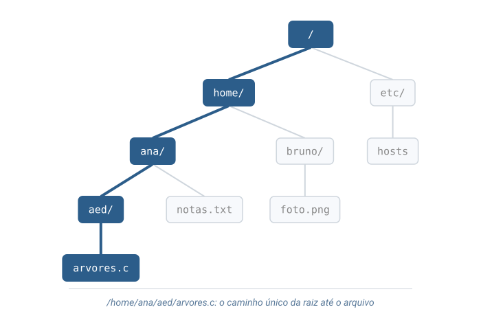
Passo 3 — a mesma árvore em texto
O comando tree imprime a árvore com recuo: cada nível de profundidade desloca o nome
para a direita, e cada pasta aparece antes do seu conteúdo.
/
├── etc
│ └── hosts
└── home
├── ana
│ ├── aed
│ │ └── arvores.c
│ └── notas.txt
└── bruno
└── foto.png
5 directories, 4 files
O tree lista os filhos em ordem alfabética. A função imprimir_arvore do código usa a mesma ideia: recuo por profundidade, nó antes dos filhos.
Passo 4 — sete nós soltos
Agora em C. Cada chamada criar_no(chave) reserva memória para um nó (a
alocação) e deixa esq e dir em NULL:
os nós existem, mas ainda não formam uma árvore.
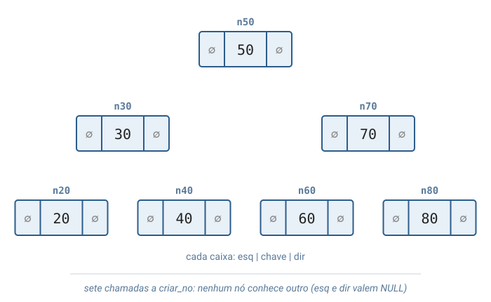
Passo 5 — ligando os ponteiros
Seis atribuições, como n50->esq = n30, ligam cada nó ao seu pai; o operador
-> acessa um campo do nó apontado. O nó n50, sem pai, é a raiz.
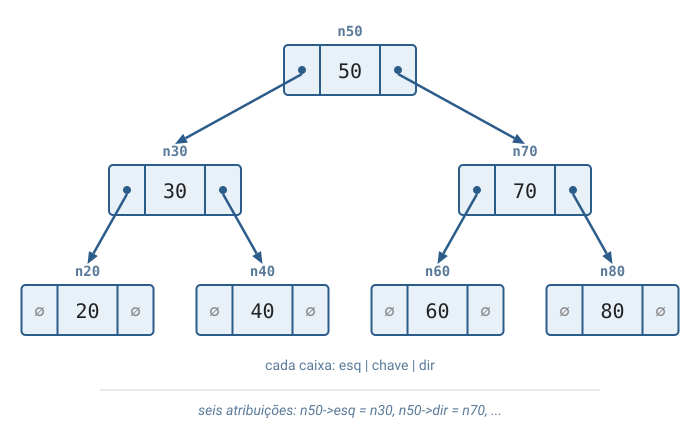
Passo 6 — percurso em pré-ordem
Percorrer é visitar cada nó uma vez. Há três ordens clássicas de percurso em profundidade (depth-first). Na pré-ordem (preorder), o nó vem antes dos filhos.
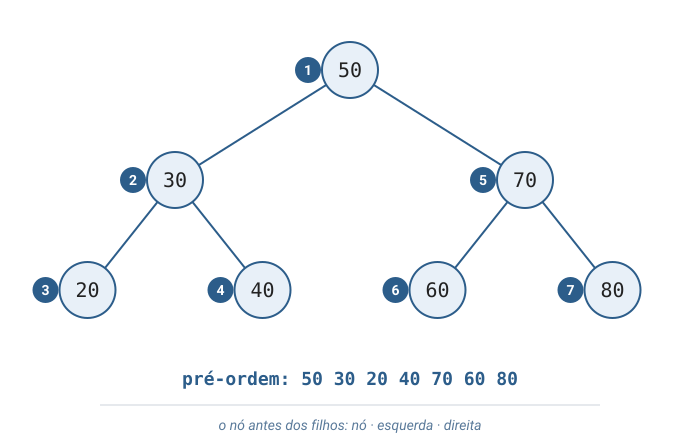
Passo 7 — percurso em ordem
No percurso em ordem (inorder), o nó fica entre a subárvore esquerda e a direita. Na ABB, as chaves saem ordenadas.
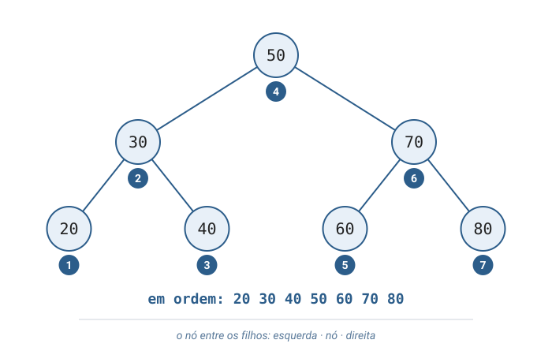
Passo 8 — percurso em pós-ordem
Na pós-ordem (postorder), o nó vem depois dos filhos. É a ordem certa para liberar a memória, isto é, devolvê-la ao sistema: os filhos saem antes do pai.
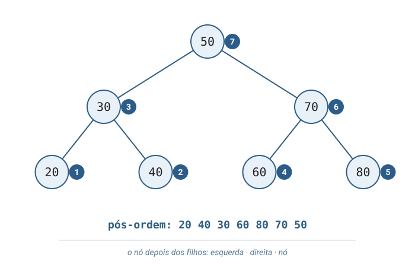
Passo 9 — buscar(60)
Inseridas na ordem 50, 30, 70, 20, 40, 60, 80 pela regra da ABB, as chaves formam a mesma árvore montada à mão. A busca compara e desce por um lado só.
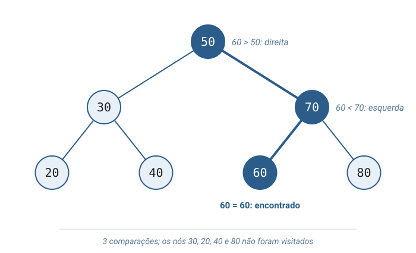
Passo 10 — inserir(65)
A inserção repete o caminho da busca. Onde a busca encontraria NULL, entra o nó novo.
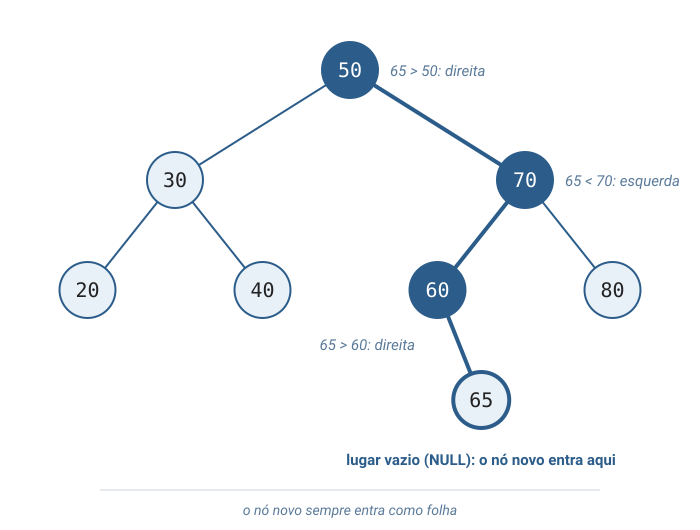
Passo 11 — remover(20): nó sem filhos
Remover uma folha é o caso mais simples: o pai passa a apontar para NULL e o nó é liberado.
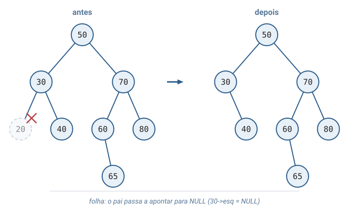
Passo 12 — remover(30): nó com um filho
Agora 30 tem só o filho 40. O filho ocupa o lugar do nó removido, e a regra de ordem continua valendo.
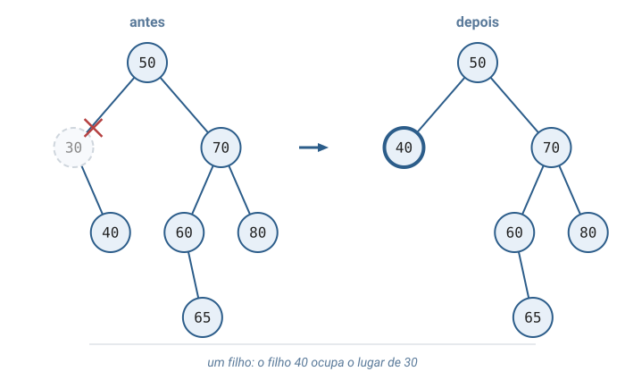
Passo 13 — remover(50): nó com dois filhos
A raiz recebe a chave do sucessor, a menor chave da subárvore direita (60). Depois o sucessor é removido da subárvore direita, onde tem no máximo um filho.
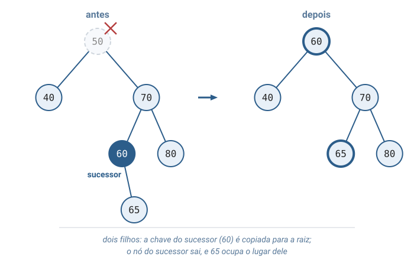
Cormen et al., cap. 12: a remoção na ABB com os mesmos três casos.
Passo 14 — rubro-negra: inserir 10 e 20
As chaves 10, 20, 30, 40 e 50 chegam em ordem crescente, o pior caso da ABB. Todo nó novo nasce vermelho.
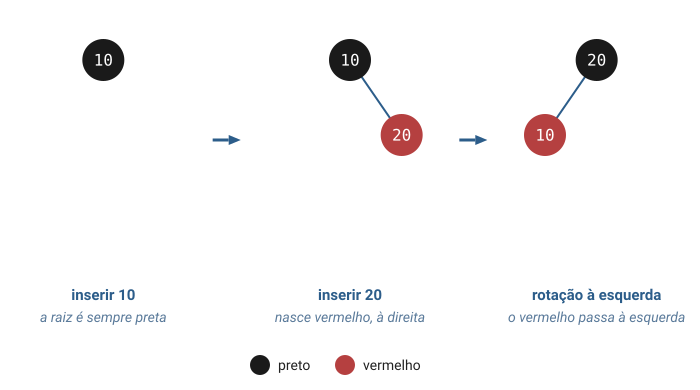
Passo 15 — inserir 30
O 30 entra vermelho à direita de 20, que fica com dois filhos vermelhos. A inversão de cores leva o vermelho para cima, e a raiz volta a ser preta.
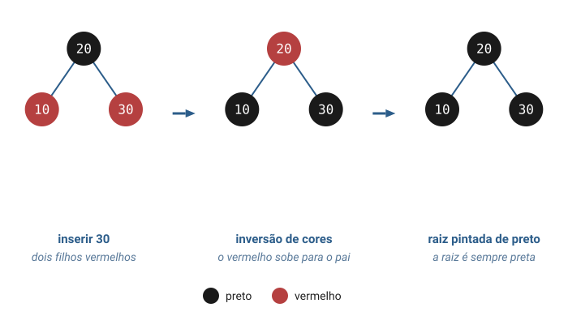
Passo 16 — inserir 40
O 40 nasce vermelho à direita de 30. A rotação à esquerda em 30 corrige o vermelho à direita, que a variante caída para a esquerda proíbe, sem mudar a ordem das chaves.
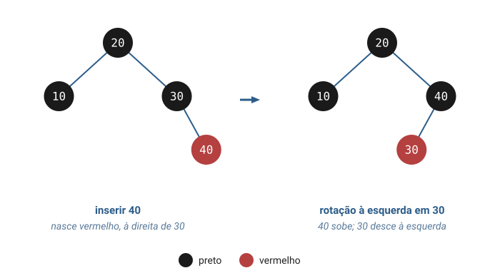
Passo 17 — inserir 50
Duas correções em sequência: a inversão de cores em 40 e, um nível acima, a rotação à esquerda em 20.
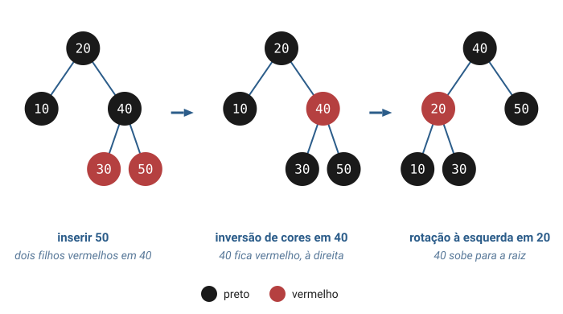
Resultado: altura 2. A ABB sem regra de balanceamento, com as mesmas inserções, fica com altura 4. A ordem crescente nunca produz dois vermelhos seguidos à esquerda; a rotação à direita aparece na ordem decrescente (Exercício 3).
Bloco 3
Por que as árvores existem?
Três problemas reais, de três áreas, resolvidos pela mesma estrutura.
Como um banco de dados encontra um registro entre milhões?
Uma tabela guarda milhões de registros, e ler todos exige milhões de leituras. O banco mantém um índice, estrutura auxiliar que leva da chave ao registro, em árvore B (B-tree): cada nó guarda várias chaves e tem vários filhos, e a busca desce comparando, como na ABB.
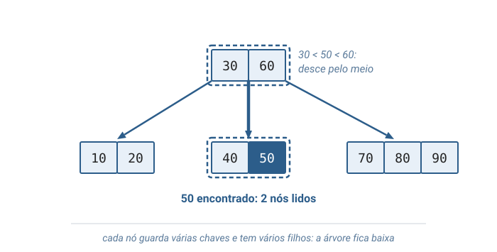
Com 100 filhos por nó, 4 níveis já guardam mais de 1 milhão de chaves: a busca lê só 4 nós.
Cormen et al., cap. 18. PostgreSQL e SQLite guardam os seus índices em árvores B.
Como o computador descobre onde fica unirios.edu.br?
Os nomes da internet formam uma árvore, o DNS. A consulta desce da raiz: cada nível indica os servidores responsáveis pelo nível de baixo, até chegar ao endereço IP, o número que identifica o computador na rede.
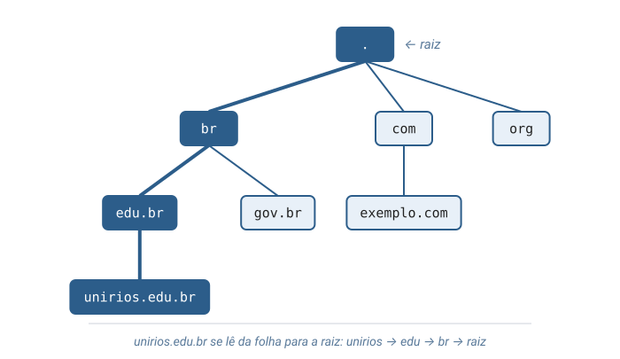
A raiz do DNS é atendida por 13 conjuntos de servidores, de a.root-servers.net a m.root-servers.net.
Como o compilador sabe que 2 + 3 * 4 vale 14?
O compilador transforma a expressão em uma árvore sintática (syntax tree). A multiplicação tem precedência maior (é calculada primeiro), por isso fica mais profunda; o valor sai de um percurso em pós-ordem.
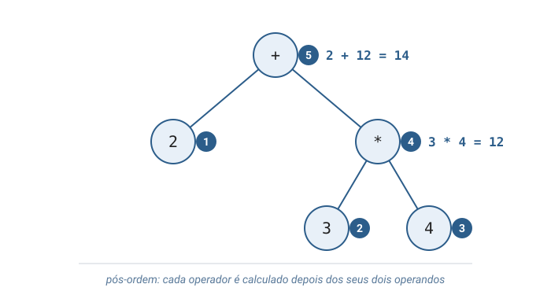
Turma, as redes locais também dependem de árvores. Quando comutadores (switches) são ligados por caminhos redundantes, uma mensagem pode circular sem fim em um ciclo. O protocolo Spanning Tree, criado por Radia Perlman em 1985, desativa ligações até restar uma árvore: sem ciclos, há um único caminho entre dois pontos da rede.
Bloco 4
Código em C
Um único arquivo: arvores.c
Todo o código desta aula está emarvores.c:#includes, structs, funções emain, na ordem em que aparecem nos próximos slides, para ler o programa inteiro de cima a baixo.
O arquivo tem três partes: a árvore binária e os percursos, as operações da ABB e a rubro-negra.
No fim, três funções de demonstração e a main.
O nó e criar_no
malloc reserva memória para um nó durante a execução e devolve o endereço dela, ou
NULL se faltar memória. criar_no trata esse caso e deixa os dois filhos em NULL.
#include <stdio.h>
#include <stdlib.h>
// Cada no guarda uma chave e dois ponteiros: um para o filho da
// esquerda e outro para o filho da direita. Filho ausente vale NULL.
typedef struct No {
int chave;
struct No* esq;
struct No* dir;
} No;
// Aloca um no sem filhos. Quem chama decide onde ligar o no.
No* criar_no(int chave) {
No* novo = malloc(sizeof(No));
if (novo == NULL) {
printf("erro: memoria insuficiente\n");
exit(1);
}
novo->chave = chave;
novo->esq = NULL;
novo->dir = NULL;
return novo;
}
Imprimir a árvore
A função imprime o nó com o recuo do seu nível e chama a si mesma para os filhos, um nível
mais fundo: o nó sai antes dos filhos, como no comando tree.
// Imprime a arvore como um sumario: cada nivel recua 4 espacos e o
// rotulo diz se o no e' filho da esquerda (E) ou da direita (D).
void imprimir_arvore(No* no, int nivel, char* rotulo) {
if (no == NULL) return;
for (int i = 0; i < nivel; i++) {
printf(" ");
}
printf("%s%d\n", rotulo, no->chave);
imprimir_arvore(no->esq, nivel + 1, "E: ");
imprimir_arvore(no->dir, nivel + 1, "D: ");
}
Chamada para a árvore toda: imprimir_arvore(raiz, 0, "raiz: ").
Os três percursos — o mesmo esqueleto
As três funções diferem só na posição do printf: antes, entre ou depois das duas chamadas recursivas.
// Pre-ordem: o no e' visitado antes dos seus filhos.
void pre_ordem(No* no) {
if (no == NULL) return;
printf("%d ", no->chave);
pre_ordem(no->esq);
pre_ordem(no->dir);
}
// Em ordem: a esquerda inteira, depois o no, depois a direita.
// Numa arvore binaria de busca, as chaves saem em ordem crescente.
void em_ordem(No* no) {
if (no == NULL) return;
em_ordem(no->esq);
printf("%d ", no->chave);
em_ordem(no->dir);
}
// Pos-ordem: o no e' visitado depois dos seus filhos.
void pos_ordem(No* no) {
if (no == NULL) return;
pos_ordem(no->esq);
pos_ordem(no->dir);
printf("%d ", no->chave);
}
destruir_arvore e abb_buscar
Destruir é um percurso em pós-ordem: free devolve ao sistema a memória de cada nó, que
depois não pode mais ser lido. Buscar segue as comparações da ABB e devolve o nó, ou NULL.
// Libera os filhos antes do pai: depois do free do pai, os campos
// esq e dir nao podem mais ser lidos.
void destruir_arvore(No* no) {
if (no == NULL) return;
destruir_arvore(no->esq);
destruir_arvore(no->dir);
free(no);
}
// Desce comparando: cada comparacao descarta um dos lados inteiro.
No* abb_buscar(No* raiz, int chave) {
if (raiz == NULL) return NULL;
if (chave == raiz->chave) {
return raiz;
}
if (chave < raiz->chave) {
return abb_buscar(raiz->esq, chave);
}
return abb_buscar(raiz->dir, chave);
}
abb_inserir e abb_minimo
A inserção devolve a raiz da subárvore; quem chama guarda o retorno, porque a árvore vazia ganha uma raiz nova. Chave repetida não entra: nenhum dos dois testes vale, e a raiz volta sem mudança.
// Desce como na busca ate um lugar vazio (NULL) e liga ali o no
// novo. Devolve a raiz da subarvore, que so muda se ela estava vazia.
No* abb_inserir(No* raiz, int chave) {
if (raiz == NULL) return criar_no(chave);
if (chave < raiz->chave) {
raiz->esq = abb_inserir(raiz->esq, chave);
} else if (chave > raiz->chave) {
raiz->dir = abb_inserir(raiz->dir, chave);
}
return raiz;
}
// Pre-condicao: raiz diferente de NULL. A menor chave esta no fim do
// caminho que sempre segue para a esquerda.
No* abb_minimo(No* raiz) {
No* atual = raiz;
while (atual->esq != NULL) {
atual = atual->esq;
}
return atual;
}
Turma, um erro comum aqui é chamar abb_inserir(raiz, 10) sem guardar o retorno.
Com a árvore vazia, o nó novo é criado, mas raiz continua NULL e o nó se perde.
O padrão é sempre raiz = abb_inserir(raiz, chave); o mesmo vale para
abb_remover e rb_inserir.
abb_remover — os três casos
Primeiro a função desce até a chave; depois trata zero ou um filho de uma vez, e dois filhos com o sucessor.
// Remove a chave e devolve a nova raiz da subarvore.
No* abb_remover(No* raiz, int chave) {
if (raiz == NULL) return NULL;
if (chave < raiz->chave) {
raiz->esq = abb_remover(raiz->esq, chave);
return raiz;
}
if (chave > raiz->chave) {
raiz->dir = abb_remover(raiz->dir, chave);
return raiz;
}
// Zero ou um filho: o filho que existe (ou NULL) ocupa o lugar do no.
if (raiz->esq == NULL) {
No* filho = raiz->dir;
free(raiz);
return filho;
}
if (raiz->dir == NULL) {
No* filho = raiz->esq;
free(raiz);
return filho;
}
// Dois filhos: o sucessor, menor chave da direita, copia a chave para
// ca e sai da subarvore direita, onde tem no maximo um filho.
No* sucessor = abb_minimo(raiz->dir);
raiz->chave = sucessor->chave;
raiz->dir = abb_remover(raiz->dir, sucessor->chave);
return raiz;
}
Rubro-negra: o nó com cor
O nó ganha o campo cor. As constantes PRETO e VERMELHO dão nome aos valores 0 e 1.
#define PRETO 0
#define VERMELHO 1
// O no da arvore rubro-negra e' o no da arvore binaria com uma cor.
typedef struct NoRB {
int chave;
int cor;
struct NoRB* esq;
struct NoRB* dir;
} NoRB;
// Todo no novo nasce vermelho: assim ele nao altera a quantidade
// de nos pretos de nenhum caminho da arvore.
NoRB* rb_criar_no(int chave) {
NoRB* novo = malloc(sizeof(NoRB));
if (novo == NULL) {
printf("erro: memoria insuficiente\n");
exit(1);
}
novo->chave = chave;
novo->cor = VERMELHO;
novo->esq = NULL;
novo->dir = NULL;
return novo;
}
eh_vermelho e as rotações
Cada rotação muda dois ponteiros e devolve a nova raiz da subárvore, que quem chama liga ao pai; a cor do nó passa para o filho que sobe.
// NULL conta como preto: e' o NIL da definicao.
int eh_vermelho(NoRB* no) {
if (no == NULL) return 0;
return no->cor == VERMELHO;
}
// O filho da direita sobe e o no desce para a esquerda dele.
// A ordem das chaves (esquerda < no < direita) continua valendo.
NoRB* rotacionar_esquerda(NoRB* no) {
NoRB* filho = no->dir;
no->dir = filho->esq;
filho->esq = no;
filho->cor = no->cor;
no->cor = VERMELHO;
return filho;
}
// Espelho da rotacao anterior: o filho da esquerda sobe.
NoRB* rotacionar_direita(NoRB* no) {
NoRB* filho = no->esq;
no->esq = filho->dir;
filho->dir = no;
filho->cor = no->cor;
no->cor = VERMELHO;
return filho;
}
Inserir na rubro-negra
A descida é a da ABB. Na volta da recursão, os três testes corrigem cada nó do caminho, nesta ordem.
// Dois filhos vermelhos: o vermelho sobe para o pai.
void inverter_cores(NoRB* no) {
no->cor = VERMELHO;
no->esq->cor = PRETO;
no->dir->cor = PRETO;
}
// Insere como na arvore de busca e, na volta da recursao, corrige as
// cores de baixo para cima, sempre nesta ordem.
NoRB* rb_inserir_no(NoRB* no, int chave) {
if (no == NULL) return rb_criar_no(chave);
if (chave < no->chave) {
no->esq = rb_inserir_no(no->esq, chave);
} else if (chave > no->chave) {
no->dir = rb_inserir_no(no->dir, chave);
}
if (eh_vermelho(no->dir) && !eh_vermelho(no->esq)) {
no = rotacionar_esquerda(no);
}
if (eh_vermelho(no->esq) && eh_vermelho(no->esq->esq)) {
no = rotacionar_direita(no);
}
if (eh_vermelho(no->esq) && eh_vermelho(no->dir)) {
inverter_cores(no);
}
return no;
}
rb_inserir, impressão e destruição
rb_inserir pinta a raiz de preto. A impressão é a de imprimir_arvore, com a cor de cada nó.
// A raiz e' sempre preta.
NoRB* rb_inserir(NoRB* raiz, int chave) {
raiz = rb_inserir_no(raiz, chave);
raiz->cor = PRETO;
return raiz;
}
// Mesmo sumario de imprimir_arvore, com a cor de cada no.
void imprimir_rubro_negra(NoRB* no, int nivel, char* rotulo) {
if (no == NULL) return;
for (int i = 0; i < nivel; i++) {
printf(" ");
}
if (no->cor == VERMELHO) {
printf("%s%d (vermelho)\n", rotulo, no->chave);
} else {
printf("%s%d (preto)\n", rotulo, no->chave);
}
imprimir_rubro_negra(no->esq, nivel + 1, "E: ");
imprimir_rubro_negra(no->dir, nivel + 1, "D: ");
}
void destruir_rubro_negra(NoRB* no) {
if (no == NULL) return;
destruir_rubro_negra(no->esq);
destruir_rubro_negra(no->dir);
free(no);
}
Demonstração 1 — a árvore montada à mão
Os passos 4 a 8 da visualização, em código: sete nós, seis ligações, a impressão e os três percursos.
// Sete nos criados um a um e ligados pelos ponteiros esq e dir.
void demonstrar_arvore_montada_a_mao(void) {
No* n50 = criar_no(50);
No* n30 = criar_no(30);
No* n70 = criar_no(70);
No* n20 = criar_no(20);
No* n40 = criar_no(40);
No* n60 = criar_no(60);
No* n80 = criar_no(80);
n50->esq = n30;
n50->dir = n70;
n30->esq = n20;
n30->dir = n40;
n70->esq = n60;
n70->dir = n80;
printf("== Arvore montada a mao ==\n");
imprimir_arvore(n50, 0, "raiz: ");
printf("Pre-ordem: ");
pre_ordem(n50);
printf("\nEm ordem: ");
em_ordem(n50);
printf("\nPos-ordem: ");
pos_ordem(n50);
printf("\n");
destruir_arvore(n50);
}
Demonstração 2 — a ABB
Os passos 9 a 13: inserir as sete chaves, buscar 60 e 65, inserir 65 e remover 20, 30 e 50.
void mostrar_busca(No* raiz, int chave) {
if (abb_buscar(raiz, chave) != NULL) {
printf("Buscar %d: encontrado\n", chave);
} else {
printf("Buscar %d: nao encontrado\n", chave);
}
}
// As mesmas chaves, agora posicionadas pela regra da arvore de busca.
void demonstrar_arvore_de_busca(void) {
int chaves[] = {50, 30, 70, 20, 40, 60, 80};
No* raiz = NULL;
for (int i = 0; i < 7; i++) {
raiz = abb_inserir(raiz, chaves[i]);
}
printf("\n== Arvore binaria de busca ==\n");
mostrar_busca(raiz, 60);
mostrar_busca(raiz, 65);
raiz = abb_inserir(raiz, 65);
raiz = abb_remover(raiz, 20);
raiz = abb_remover(raiz, 30);
raiz = abb_remover(raiz, 50);
printf("Depois de inserir 65 e remover 20, 30 e 50:\n");
imprimir_arvore(raiz, 0, "raiz: ");
destruir_arvore(raiz);
}
Demonstração 3 — rubro-negra e main
As mesmas cinco chaves crescentes nas duas árvores, para comparar as formas.
// Chaves em ordem crescente: o pior caso da arvore de busca comum.
void demonstrar_rubro_negra(void) {
No* abb = NULL;
NoRB* rubro_negra = NULL;
for (int chave = 10; chave <= 50; chave = chave + 10) {
abb = abb_inserir(abb, chave);
rubro_negra = rb_inserir(rubro_negra, chave);
}
printf("\n== Inserindo 10, 20, 30, 40, 50 ==\n");
printf("Arvore de busca comum:\n");
imprimir_arvore(abb, 0, "raiz: ");
printf("Arvore rubro-negra:\n");
imprimir_rubro_negra(rubro_negra, 0, "raiz: ");
destruir_arvore(abb);
destruir_rubro_negra(rubro_negra);
}
int main(void) {
demonstrar_arvore_montada_a_mao();
demonstrar_arvore_de_busca();
demonstrar_rubro_negra();
return 0;
}
Compilação e saída esperada
Compile com os avisos ativados e compare a saída do programa com o texto abaixo, linha a linha.
gcc -Wall -Wextra -o arvores arvores.c
./arvores
== Arvore montada a mao ==
raiz: 50
E: 30
E: 20
D: 40
D: 70
E: 60
D: 80
Pre-ordem: 50 30 20 40 70 60 80
Em ordem: 20 30 40 50 60 70 80
Pos-ordem: 20 40 30 60 80 70 50
== Arvore binaria de busca ==
Buscar 60: encontrado
Buscar 65: nao encontrado
Depois de inserir 65 e remover 20, 30 e 50:
raiz: 60
E: 40
D: 70
E: 65
D: 80
== Inserindo 10, 20, 30, 40, 50 ==
Arvore de busca comum:
raiz: 10
D: 20
D: 30
D: 40
D: 50
Arvore rubro-negra:
raiz: 40 (preto)
E: 20 (vermelho)
E: 10 (preto)
D: 30 (preto)
D: 50 (preto)
Bloco 6
Exercícios práticos — investigação com IA
Em duplas, usem um assistente de IA (ChatGPT, Gemini, Claude ou outro) para investigar árvores. A IA propõe; a dupla confere.
- Registrem cada pergunta feita (o prompt) e a resposta recebida.
- Confiram toda afirmação: executando
arvores.cou no Cormen. - Anotem onde a IA acertou e onde errou.
- Entrega: o registro e as conclusões da dupla.
A resposta mínima aceitável de cada exercício aparece com um clique.
Exercício 1 — a ABB à mão
Peçam à IA a ABB formada pela inserção de 45, 15, 79, 90, 10, 55, 12 e os três percursos.
Desenhem a árvore à mão, alterem o vetor chaves de demonstrar_arvore_de_busca,
chamem pre_ordem, em_ordem e pos_ordem logo após o laço de inserção
e comparem as três versões.
Resposta mínima aceitável: 45 na raiz; à esquerda, 15, com o filho 10, que tem o filho direito 12; à direita, 79, com os filhos 55 e 90.
Pré-ordem 45 15 10 12 79 55 90 · em ordem 10 12 15 45 55 79 90 ·
pós-ordem 12 10 15 55 90 79 45.
Exercício 2 — a altura
Peçam à IA uma função int altura(No* raiz). Antes de usar, a dupla explica cada linha.
Testem com a árvore vazia, com um nó e com a ABB de 10, 20, 30, 40, 50.
Por que fontes diferentes dão alturas diferentes para a mesma árvore?
Resposta mínima aceitável: função recursiva; a árvore vazia devolve −1, e um nó devolve
1 + o maior valor entre altura(raiz->esq) e altura(raiz->dir).
Resultados: −1, 0 e 4.
A diferença é de convenção: contar arestas, como nesta aula, ou contar nós (vazia 0, um nó 1, cadeia 5).
Exercício 3 — a ordem decrescente
Perguntem à IA como fica a rubro-negra caída para a esquerda depois de inserir 50, 40, 30, 20, 10.
Executem com rb_inserir e comparem. Qual correção aparece que não apareceu na ordem crescente?
Resposta mínima aceitável: a rotação à direita (dois vermelhos seguidos à esquerda), seguida de inversão de cores.
A árvore final é a mesma da ordem crescente: 40 preto na raiz; 20 vermelho, com 10 e 30 pretos; 50 preto.
Desafio — árvore B ou rubro-negra?
Perguntem à IA por que bancos de dados usam árvore B, e não rubro-negra, nos índices. Confiram no capítulo 18 do Cormen e escrevam a conclusão em três frases que usem as palavras altura, disco e filhos por nó.
Resposta mínima aceitável: a árvore B tem centenas de filhos por nó, então a sua altura é muito menor que a da rubro-negra. Cada nó visitado é uma leitura do disco, que é lenta. Menos níveis significam menos leituras em cada busca.
Referências
- Cormen, T. H.; Leiserson, C. E.; Rivest, R. L.; Stein, C. — Algoritmos: Teoria e Prática. Apêndice B, seção B.5 (árvores); cap. 10 (representação de árvores enraizadas); cap. 12 (árvores binárias de busca); cap. 13 (árvores rubro-negras); cap. 18 (árvores B). Referência principal da aula.
- Backes, A. R. — Algoritmos e Estruturas de Dados em Linguagem C (LTC, 2023). Capítulo de árvores: árvore binária e ABB implementadas em C.
- Veloso, P.; Pereira, S. do L. — Estruturas de Dados em C: Uma Abordagem Didática (Saraiva, 2016). Árvores como tipo abstrato de dados.
- Toscani, L. V.; Veloso, P. A. S. — Complexidade de Algoritmos (Bookman, 2012). Análise de custo e notação O.
- Schildt, H. — C Completo e Total (Makron Books, 1997). Ponteiros, structs e alocação dinâmica.
Leituras complementares:
- Sedgewick, R. — Left-leaning Red-Black Trees (2008). A variante rubro-negra implementada nesta aula.
- Sedgewick, R.; Wayne, K. — Algorithms, 4ª ed. (Addison-Wesley, 2011), seção 3.3. Árvores de busca balanceadas.
- Wirth, N. — Algoritmos e Estruturas de Dados (LTC, 1999). Visão clássica de árvores.
Fim — Árvores
Perguntas
Uma regra de forma faz da árvore uma hierarquia; uma regra de ordem faz dela uma estrutura de busca; uma regra de cores garante que essa busca seja rápida em qualquer caso.